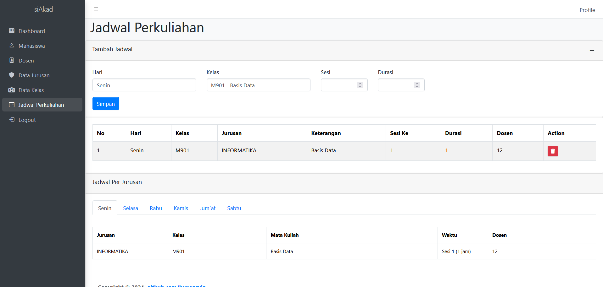

Academic Information System
Project links
GitHub →Skills
PHP
MVC
Codeigniter
MySQL
Admin LTE
About this project
This web-based project is designed to manage the academic system on the admin side, built using CodeIgniter 3 and following the MVC (Model-View-Controller) architecture. The project leverages the AdminLTE and Bootstrap frameworks for the frontend, providing a clean and responsive user interface. It allows administrators to manage data for teachers, students, classes, and majors, and includes features such as a schedule table for easy viewing and organization of academic schedules. The system is designed to streamline administrative tasks, improve data management, and enhance the overall efficiency of academic operations.
Key Features:
- Admin Dashboard
- Centralized dashboard for managing academic data.
- Quick access to key features and statistics.
- Teacher Management
- Add, edit, and delete teacher profiles.
- View and manage teacher schedules and assignments.
- Student Management
- Add, edit, and delete student records.
- Track student enrollment, classes, and academic progress.
- Class Management
- Create and manage class schedules.
- Assign teachers and students to specific classes.
- Major Management
- Add, edit, and delete academic majors.
- Organize students and classes by major.
- Schedule Table
- Interactive schedule table for viewing and managing academic schedules.
- Filter schedules by teacher, student, class, or major.
- User-Friendly Interface
- Built with AdminLTE and Bootstrap for a responsive and modern design.
- Intuitive navigation and easy-to-use forms.
- Search and Filter Functionality
- Advanced search and filter options for quick data retrieval.
- Pagination for handling large datasets.
- Export and Import Data
- Export data to PDF, Excel, or CSV formats.
- Import data from external sources for bulk updates.
- Responsive Design
- Fully responsive layout for access on desktops, tablets, and mobile devices.
- Consistent user experience across all devices.